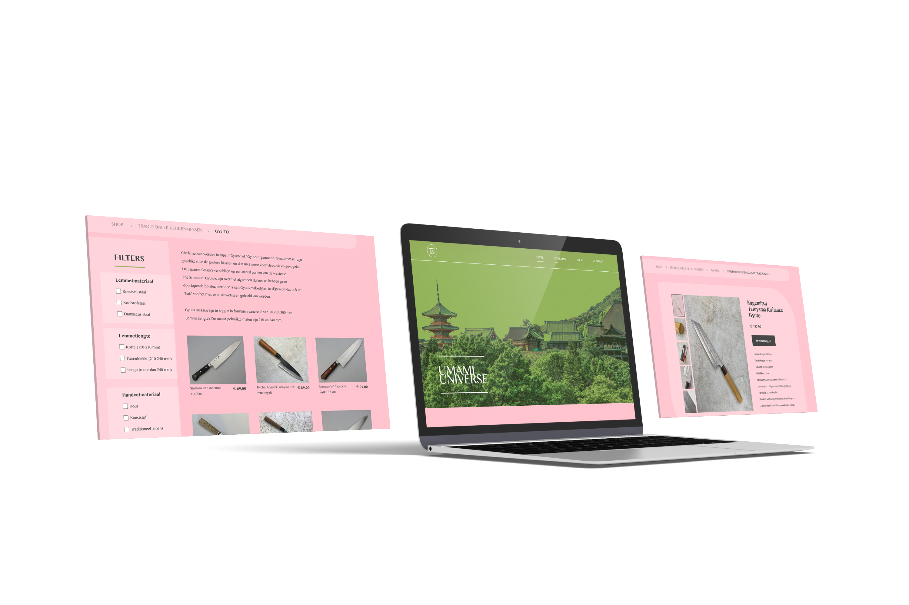

ROLE
UX DESIGNER,
VISUAL DESIGNER
CONTEXT
SCHOOL PROJECT
PERIOD
2023

INTRODUCTION
for the visual interface design minor i wanted to create a website for traditional japanese kitchen tools, using a visual language that fits with the subject matter.
PROCESS
i used a step-by-step method for this project where i created multiple versions of the sitemap; did research on nav-bars, filtering, colors; and created moodboards.
this way of working was very valuable and because of the different versions of the final prototype i feel like my work has gotten a lot better.
FOR THIS PROJECT I:
- did a lot of research on ux, but also on cultural meanings in design
- used grid as my holy grail in adobe xd
- made my first clickable prototype with a few animations
END RESULT
this prototype uses colors that are associated with Japan: matcha green and cherry blossom pink. the use of whitespace feels calm and elegant, which is what Japan is associated with.
geometrical shapes and gradients are used to make the design stand out a little bit.
the whole design is put into a clickable prototype in adobe xd.
visit prototype